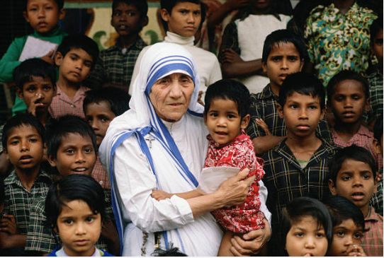

Mother Teresa( 26 August 1910 – 5 September 1997 )
A short Biography of Mother Teresa
- Mother Mary Teresa Bojaxhiu born (26 August 1910 – 5 September 1997)
- Film and literature
- Documentaries and books
- Teresa is the subject of the 1969 documentary film and 1972 book, Something Beautiful for God, by Malcolm Muggeridge.[173] The film has been credited with drawing the Western world's attention to Mother Teresa.
- Christopher Hitchens' 1994 documentary, Hell's Angel, argues that Teresa urged the poor to accept their fate; the rich are portrayed as favoured by God.[174][175] It was the precursor of Hitchens' essay, The Missionary Position: Mother Teresa in Theory and Practice.
- Dramatic films and television
- Geraldine Chaplin played Teresa in Mother Teresa: In the Name of God's Poor, which received a 1997 Art Film Festival award
- She was played by Olivia Hussey in a 2003 Italian television miniseries, Mother Teresa of Calcutta.[177] Re-released in 2007, it received a CAMIE award.[178]
- Teresa was played by Juliet Stevenson in the 2014 film The Letters, which was based on her letters to Vatican priest Celeste van Exem
- Mother Teresa, played by Cara Francis the FantasyGrandma, rap battled Sigmund Freud in Epic Rap Battles of History, a comedy rap YouTube series created by Nice Peter and Epic Lloyd. The Rap was released on YouTube September 22, 2019
- In the 2020 animated film Soul, Mother Teresa briefly appears as one of 22's past mentors